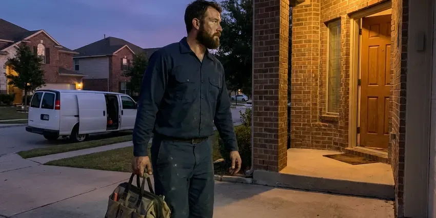

Plumbing Repair in Watertown, SD
Plumbing trouble in Watertown, SD never shows up at a good time. HWR Plumbing restores your water fast and cleans up after.
- Same-Day Visits
- Licensed Plumbers
- Camera and Leak Detection
- Flat Price Up Front

Leaks, clogs or no hot water? Get it fixed today in Watertown, SD.
A slow drip costs more every week it runs, so get it looked at now.
Plumbing Repair in Watertown, SD Done Right the First Time
HWR Plumbing works on the pipe South Dakota homes actually have, meaning galvanized steel in older houses, polybutylene in some 1980s builds and PEX in newer subdivisions. Each one fails in its own way. We diagnose with cameras, pressure gauges and acoustic leak detection, then hand you a written price before a wrench comes out.
Work we handle every week:
- Find and repair leaks, in the open or behind walls
- Thermocouple, gas valve and element swaps on water heaters
- Clear and repair sewer and drain lines

Additional Plumbing Repair Services in Watertown, SD
We offer expert plumbing repair services across Watertown, SD to fix leaks, restore flow, and keep your system running smoothly.


Customers
Why Choose HWR Plumbing for Plumbing Repair in Watertown, SD?
Plumbing code changes every few years, and our plumbers train on each new edition South Dakota adopts so the repair matches what the inspector expects. Older installs often miss expansion tanks, bonding jumpers, vacuum breakers or a proper relief valve drain. We flag those for you.
- Local Know-How, Our plumbers see scale buildup and foundation movement in South Dakota homes every week.
- Licensed Plumbers, Every plumber is licensed and insured, and trains each year on current methods.
- Real Testing, Cameras, thermal imaging and pressure tests locate hidden leaks without opening extra walls.
Citywide Coverage
Wherever you are in Watertown, a licensed plumber is one call away. HWR Plumbing has crews based nearby, so emergency response stays fast.
Experienced Team
Pride in the trade shows up in small things, like a level water heater and a solder joint with no drip of flux running down the pipe. Crews at HWR Plumbing take that seriously. They diagnose quickly and follow safety rules on every call.
Safety-First Approach
Gas lines and pressurized water carry real risk during a repair. Our technicians follow the codes Watertown and South Dakota enforce, using the correct tools and methods.
Trusted Certified Watertown Plumbing Services Professionals
At HWR Plumbing, we take pride in licensed, certified plumbing services throughout Watertown, SD. Credentials matter in this trade. Our plumbers hold recognized industry credentials, and they follow strict safety and quality rules on every repair, installation and maintenance call we run.
Call Us Now PHCC Plumbing Contractor Recognition
PHCC Plumbing Contractor Recognition Better Business Bureau (BBB) Accreditation
Better Business Bureau (BBB) Accreditation Angi Certified Pro
Angi Certified Pro ISO 9001 Quality Management Certification
ISO 9001 Quality Management CertificationPlumbing Repair Work We Do in Watertown, SD
Water Heater Repair in Watertown
No hot water usually traces back to a handful of parts, such as a thermocouple, a gas valve, a burned-out element or a tripped high-limit switch. Each part gets tested before anything is replaced. Mineral scale builds up quickly in water heaters, faucet aerators and fixtures here, so a softening system is a common upgrade for homeowners. The minerals settle to the bottom, where they bury the element and make the tank pop. A yearly flush slows it down.

Slab Leak Detection and Repair in Watertown, SD
A warm spot on tile, a meter that spins with every tap off, or a water bill that jumps for no reason. Those are slab leak signs. Acoustic listening gear and a thermal camera find the spot before anyone touches the concrete. The repair might be a spot dig through the floor or a reroute through the attic, and you get a price for each.
Gas Leak Repair in Watertown
Rotten-egg odor near the range or a hiss at the meter means get out of the house first. Call the gas utility from outside, then call us for the repair. We track the leak with a combustible gas detector and bubble solution, then replace whatever failed and pressure test the line. No shortcuts on gas.
Well Pump Repair in Watertown, SD
No water at the tap on a well system narrows the list quickly. It is usually the pressure switch, the capacitor in the control box, the pump motor or a waterlogged pressure tank. Voltage and amp readings at the control box tell us whether the pump needs to come up. A submersible pull takes two techs and a truck.
Drain and Pipe Repair in Watertown
Hydro-jetting at around 4,000 psi clears grease and scale that a cable snake only pokes a small hole through, which is why the clog keeps coming back. HWR Plumbing follows every jetting job with a camera so you can see whether the pipe is sound. Damaged sections get cut out and replaced in whatever material matches the line. A broken pipe needs a repair, not more jetting.
Water Heater Parts Repair in Watertown
Rumbling or popping from a tank means sediment on the bottom. A rotten-egg smell in the hot water usually means the anode rod is reacting with the water. We replace thermocouples, thermostats, elements, gas valves, anode rods and relief valves from truck stock, which covers the large majority of tank repairs we see in a year. Rust at the seams is different. No part fixes that, and we tell you plainly.
Slow Drain Repair in Watertown
Gurgling toilets and a tub that drains slow often trace to a blocked vent or a sagging drain line. After clearing it, we camera the line and fix whatever is broken. Common fixes include replacing corroded cast iron, cutting out failed ABS joints, rebuilding a broken trap arm and resetting toilets on a new wax ring and flange. No monthly snaking.

24-Hour Plumbing Repair in Watertown
Night and weekend calls are handled by the same crew who work our weekday jobs. HWR Plumbing runs emergency repair in Watertown around the clock for burst pipes, frozen lines, backed-up sewers and water heaters dumping water on the floor. We stop the damage first. The permanent fix follows that night or the next morning, depending on parts.
Local Plumbing Repair Near Me in Watertown, SD
Older neighborhoods and new subdivisions in Watertown have different plumbing. Newer construction relies mostly on PEX supply lines and plastic drains, which handle freeze and thaw cycles better than rigid pipe. The calls we run most are roots in the sewer and scale in the valves. We pick repair materials for the house in front of us, so a 1960s cast iron stack does not get the same fix as a 2015 PEX manifold. The right fitting matters.
Neighbors in Watertown call us about a weeping water heater or a toilet that will not stop running more than anything else. We fix those in homes across South Dakota every week. Fill valves and heater parts are already on board.
HWR Plumbing at a Glance
- Fully licensed plumbing team covering Watertown, SD
- Same-day appointments and 24/7 emergency response
- Upfront, flat-rate pricing before work begins
- 4.8-star rated by 304+ South Dakota customers
Watertown Map
Watertown Information
- Population
- 23,230
- Area codes
- Local
- Service area
- Watertown and towns within a 40 mile drive
- Nearby
- Brookings, Madison, Huron, Aberdeen
Mineral scale builds up quickly in water heaters, faucet aerators and fixtures here, so a softening system is a common upgrade for homeowners. In Watertown, SD that shows up as scale on fixtures, pinholes in copper and the occasional slab line failure. Fixing it promptly keeps water out of walls and floors.
Expert Services
Reach out to HWR Plumbing for reliable plumbing work done by licensed pros in Watertown, SD.
Our Specialized Plumbing Services in Watertown, SD
At HWR Plumbing, you get every kind of plumbing service from one company across Watertown, SD. From leak detection to full system installs, our team works fast and charges fair prices on homes and commercial properties alike. Here are the core services we offer:


How a Plumbing Repair Visit Works in Watertown, SD
Diagnose first, price second, repair third.
Call or Send a Request
Call (605) 480-9736 or use the online form to get on the schedule. A few quick questions help us send the right parts.
In-Home Diagnosis
A HWR Plumbing plumber arrives at your Watertown home and checks the system. Cameras, gauges and meters find the real cause.
Options and Price
You get a plain explanation of the problem and a flat price for each repair option. You pick before work begins.
Frequently Asked Questions About Plumbing Repair in Watertown
Most service calls in Watertown fall into two buckets. Minor repairs, such as a leaky faucet or a running toilet, often cost $150 to $350. Slab leaks and full sewer replacements range from about $2,000 to past $10,000, with depth and access driving the number. Pricing is flat and given before work.
Fixture and valve repairs take one to two hours. A water heater repair is usually a one-visit job. Slab leak and sewer repairs can take one to three days, depending on whether we dig, reroute or line the pipe.
We do. Our technicians work on Rheem, Bradford White, Rinnai and Navien heaters along with most faucet, toilet and garbage disposal brands sold at the big box stores. We also service well pumps and water softeners.
Small clogs and a worn flapper are fair game for a homeowner, but anything involving gas, a water heater or the sewer belongs with a licensed plumber. A bad DIY repair can cost more than the original problem.
Most morning calls are handled the same day. Active leaks, sewer backups and no-water calls get emergency service around the clock.
Our workmanship is warrantied, and parts carry their manufacturer warranties. You will find the terms printed on the invoice.
Swapping an aerator, a flapper or a showerhead is a reasonable DIY job. Gas, water heaters, slab leaks and sewer work come with code and safety rules that call for a licensed plumber.
Sometimes, for a plunger job or a new showerhead. Most repairs go better with a professional, because a wrong move can turn a drip into a flood.
What Our Customers Say About Our Plumbing Experts

Karen W.
After our third pinhole leak in copper, we stopped patching. HWR Plumbing gave us a written plan room by room and repiped the house in PEX while we stayed in it. The crew covered our floors every morning and cleaned up every night.
Repiping · Brandon, SD
Daniel K.
A pipe burst in the garage ceiling at 11 at night. Someone answered on the second ring, and the plumber was in my driveway about fifty minutes later. He shut off the main, cut out the split section, and had water back on before 2 am.
Emergency Plumbing · Huron, SDNathan E.
Our tankless heater kept throwing an error code and shutting off mid shower. The tech flushed the heat exchanger, which was full of scale, and replaced a bad flow sensor. Hot water has been steady for half a year now.
Water Heater Repair · Aberdeen, SD
Rachel N.
Hard water was leaving white crust on every faucet and our dishwasher was struggling. The tech tested the water, recommended a softener sized for a family of five, and installed it with a bypass valve in one afternoon. The spots on our glasses are gone.
Water Softener · Brookings, SDTyler J.
We bought a taller comfort height toilet for my dad, who just had knee surgery. The plumber pulled the old one, found the flange was cracked, and replaced it before setting the new bowl. Took about two hours.
Toilet Installation · Brandon, SD
Laura S.
Our 40 gallon tank started leaking from the bottom after thirteen years. The tech hauled the old one out, set a new unit with a fresh expansion tank, and had hot water running in about four hours. He took the old tank with him too.
Water Heater Replacement · Brookings, SD